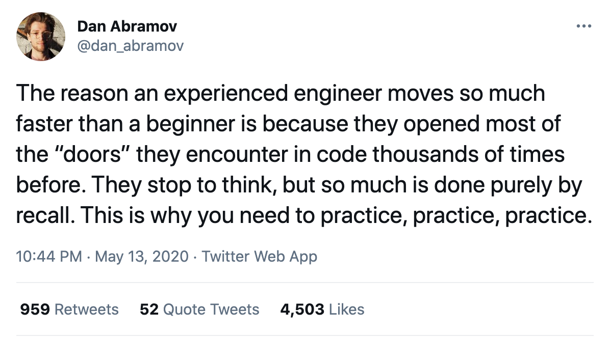

Posts & Announcements
Creating Tasks on Your Trello Board
Thursday February 16, 2023✅ TODO: Create tasks on your Trello board today
Your team’s Trello board is ready with columns predefined to start you off. You are welcome to adapt it and create additional columns to support the way your team works.
You should put your user stories on your Trello board in the User Stories column. You’ll find a template card for user stories that you can copy if you want.
Then, break them down into tasks and put tasks on cards.
How to make cards
- Task cards go in the Backlog column.
- Use the Task Card template.
- One task per card
- Each task should be doable in a day or less.
- Don’t assign tasks to anyone yet.
- Link a task back to its user story card using the User Story field.
- Each card must include how you will know when the task is done (its “definition of done”).
Your Team’s Trello Board
These are invite links to join your team’s Trello board. You may be asked to create a free Trello account once you click on the link to join the board. You have to join the board through this link.
🛹 Defining MVP
Tuesday February 14, 2023✅ TODO for your project team today
1. Post your team charter in your team’s Slack channel.
Please pin or bookmark it at the top of the channel so that it can be referenced easily.
2. What is your app and what does it do?
Your first and most important goal today is to answer that question.
3. Clearly define your team’s Minimum Viable Product (MVP).
Talk through features your app might have and then narrow them down to the most essential.
👾 Welcome to Phase 4 👾
Monday February 13, 2023The past few months have prepared you to take on the challenge ahead in these next four weeks. You may not feel ready, but you ARE.
At the end of this phase, your team will present your product to an audience of local tech professionals, hiring partners, and the Momentum community.
✅ TODO this morning
- 🕛 BY NOON: Make sure you have filled out this survey about your interests and intentions for Phase 4.
- 🌟 Read this post for an engineer’s perspective on an approach to building software that parallels almost precisely the approach we take in Phase 4: How we use “ship small” to rapidly build new features at GitHub
- 💜 Are you a Chaos Muppet or an Order Muppet? Read this post and post your personal findings in Slack 👀.
✅ TODO this afternoon with your project team
- Create a Slack channel (please create an actual channel, not a thread) and add team members, Amy, and Rebecca to it.
- Create a team charter with your team and pin or bookmark it in your team’s Slack channel. This is an agreement you create together to determine the expectations you have for each other and ensure you can met your goals. Use your experience working on teams in the past to figure out what will help you work together with a minimum of friction and a maximum of productivity. Here are references to help you with creating this agreement.
- Brainstorm ideas for your final project with your team, and be ready to pitch one or two ideas tomorrow morning.
Peer Feedback: Collaboration Skills
Thursday February 9, 2023Working on a software engineering team requires a great deal of skill, and not just on the technical side. The skills you need to collaborate successfully can be learned and practiced and can grow over time. This short video explains why a growth mindset in a professional context is valuable to employers and employees alike.
The purposes of peer feedback include:
- to encourage folks to keep doing what is helpful and productive for the team
- to demonstrate how one’s actions affect others
- to highlight specific areas to practice and improve on in Phase 4 and beyond
Honest feedback is valuable when offered respectfully and in the spirit of kindness and cooperation. Creating software is a team sport!
✅ Please fill out this form by tomorrow at noon for the people you are assigned to review. You’ll get a message from me in Slack letting you know who you should submit feedback for, but you are also welcome to submit feedback for anyone else I haven’t assigned.
Wrapping Up the Collaborative Project
Tuesday February 7, 2023🎯 The Definition of Done
👉 If your project meets minimum requirements today, HUZZAH! That is awesome. You should be working on at least one additional or spicy feature.
👉 If your project does not yet meet minimum requirements, your goal should be meeting them by the end of the day tomorrow.
Please include a README in your project repo. The README should:
- be titled README.md and live at the root of your project repo
- be written in Markdown
- include a link to your production application
- have instructions for getting your application running locally, so that any developer could pull it down and run it
- Backend: your README must include documentation for your API’s available endpoints
Minimum Requirements for Social Cards
- A user is able to sign up/register to be a user of your app.
- A user is able to log in to the app, and log out.
- A user can see a list of all the cards from all users of the app.
- A user can see a list of all the cards they’ve created.
- A user can see the details of a single card (with front and back messages).
- A user can create a new card.
- A user can update a card they created.
- A user can delete a card they created.
- A user can follow another user.
- A user can unfollow another user.
- A user can see a list all cards created by a user that they follow.
- A user can see a list all the users they follow.
- Your repo includes a README with project documentation.
- Front end: your app is styled in a way that looks finished.
Back-end Notes
Depending on how you’ve constructed your API, you might have separate endpoints for all of the above, or some of the functionality might be combined in a single endpoint (for instance, if you nested answers in the question detail endpoint, like questions/4/answers). What matters is that your front-end team can perform all the necessary actions to provide full functionality to the user and that your endpoints are accurately documented in your README.
⚠️ Be sure to test that you have implemented permissions-checking correctly for these endpoints. For example, your API should not allow a user who is not the creator of a card to update a card.
Completing Phase 3
Monday February 6, 2023To wrap up Phase 3, you’ll finish the Social Cards project and create a short video walk-through of your code.
The project is due by EOD on Thursday, February 9.
The video is due at 9:00 am ET Friday, February 10.
✅ Requirements for passing the phase (for both front-end and back-end)
- Your application meets the minimum requirements detailed in the assignment.
- Your application runs without errors in production.
- Your application repo includes a README with a link to your production application and instructions for running the application locally.
- Your presentation video meets the below requirements.
You might not pass the phase if:
- Your project is incomplete or does not meet the minimum requirements.
- Your project is not running in production.
- You have not made a substantive contribution to the project (i.e., you have committed meaningful code to the project).
- You cannot explain how your code works.
- You do not turn in a video.
📹 Video Presentations
Each of you (not each team, but each individual) will record a screencast on one of the topics listed below. The video should be 4-5 minutes long, and no longer.
Your target audience is a Momentum learner who is just at the beginning of Phase 3. Imagine you are teaching them how to do what you’ve done in this project. Give them the benefit of your experience over these past several weeks.
This video does not have to be polished, scripted, or edited. But your viewer should be able to follow what you’re saying and understand the points you are making.
If you don’t already have a tool you’re familiar with to record your video, Loom is very simple to use for screencasts and will let you share your video easily. The free account also limits your videos to 5 minutes, so it should help you with timing. You can record a screencast with or without your face showing; either way is fine.
Please post your video and submit the url for it using this form. Your videos are due by 9:00 am ET on Friday, February 10.
Video Presentation Requirements
Back End
Your target audience is another beginner developer who is familiar with Django but not with DRF, Postgres, or deployment.
Your video should include a demo of your application via relevant requests in Insomnia and should show and walk through your code. You must use the production endpoints in the demo, not localhost.
Please focus on one of these topics.
- Demo 1-3 endpoints in your application, explaining how you implemented them. Did you make any interesting decisions or customizations along the way? You might talk about some or all of these topics: the url patterns; the HTTP methods that are handled; serializers; permissions; querysets and any filtering you may have done.
- Take one or more of the models you created for your project and explain their design. Why did you design your model(s) the way you did? Some things you probably want to talk about: the relationships a model has with other models, and why you need them; any custom methods you wrote for a model; any queries you did with your models that were tricky or interesting; anything you learned about how to work with models doing your project.
- What is the most interesting specific feature or technical detail that you implemented for this project? Explain its functionality and implementation – that is, what it does and how it does it.
Front End
Your target audience is another beginner developer who is familiar with JavaScript but not with React or deployment.
Your video should include a demo of the relevant part of your application running in the browser in production, not on localhost, and should show and walk through your code.
Please focus on one of these topics.
- Walk us through the code for one of the components in your app and explain how it works. Topics you might touch on: what the purpose/responsibility of the component is; when and where it is rendered; what props it receives from its parent; any state the component has, what it’s for, and how it changes; any events that component handles; any hooks used in the component besides useState (e.g., useEffect, useRef, useLocalStorageState).
- Build a new teeny tiny React application from scratch and talk us through some of the basics, including components, state, and props. You can start after creating a new create-react-app application and npm installing all the things. Your application should have at least one component that does something – for example, you could show how to build an input form that echos whatever your user types and displays it on the page in real time. If you want to get fancier than this, you can – just keep it to 5 minutes.
- Explain how you have used React Router to implement routes in your app. What URLs can your app handle? How do you handle navigation from component to component?
Peer Feedback
Peer feedback is often included in workplace review processes (sometimes it’s called a 360º review), focusing on the collaborative nature of work. In software engineering, effective collaboration skills make you a valuable employee and contributor.
We’re piloting an assessment of collaboration skills in Phase 3 that asks your teammates to evaluate the experience they have had working with you. Each person will be asked to fill out a form for other folks they have worked with throughout the course.
How will the feedback be collected?
The feedback will be anonymous. I’ll give you a Google form and assign you, privately, to the folks you will be asked to submit feedback for. I’ll share the forms at the end of this week.
For each person, you’ll be asked to provide feedback on a scale of 1-5, from strongly disagree to strongly agree, on the following collaboration skills:
- They communicate effectively.
- If you communicate effectively, you do things like:
- respond to messages on Slack promptly
- check in with teammates often
- proactively provide information that others need to know without waiting to be asked
- let teammates know what you are working on
- explain and share your ideas
- If you communicate effectively, you do things like:
- They collaborate effectively.
- If you collaborate effectively, you:
- ask what others think
- listen carefully to other people’s ideas
- revise your ideas based on the ideas of others
- compromise and seek consensus
- find ways to share the work
- If you collaborate effectively, you:
- I can rely on them to do what they say they will do and to meet deadlines.
- They take on a fair or equal share of the work.
- They are considerate about not blocking the progress of others.
- They offer and provide help if needed and readily share what they know.
- They demonstrate that they care about delivering a great product.
- They treat me and others with respect.
- They show initiative and creativity in solving problems and finding solutions.
- I enjoy collaborating with them and would work with them again.
There is one open-ended question on the feedback form:
What is the best thing about working with this person? What do you appreciate most about the work they do, or the way they work?
👉 I’ll share all the feedback about you with you.
FE + BE Collaborative Project
Monday January 30, 2023This week you will begin work on a project with both front- and back-end teammates. This project is due at the end of the Phase, on Thursday, February 9.
In order to successfully complete the phase:
- This project must be complete and meet the minimum requirements.
- It must be deployed and running without errors in production.
- Each team member must make a substantive contribution to the project (this is best demonstrated through frequent, well-formed commits).
- Each team member must be able to explain how the project works (that is, back-end devs know how the back-end works; front-end devs know how the front-end works).
The front-end will build a React application that will make AJAX requests to the back-end application built with Django and Django REST Framework. There are no strict rules about who works on front-end or back-end, so your team can decide how best to use your resources.
Your team can choose between two projects. They will both give you practice doing what you have been doing (building an API or building a React application) but they present some different problems to solve.
Choose the one that sounds more fun or interesting to you.
We haven’t yet covered everything you’ll need to be able to do this project, so that will be our task this week and next.
🏗️ Project: Social Cards or QuestionBox
🔗 GitHub Project Invitation Link
How to accept the assignment and create the repos on GitHub
The back end will work in their own repo and the front end will work in their own repo, so for the same project there will be two repos.
One back-end dev should accept the assignment invitation and create a new team; name the team something like “Team Yeti Back-end” (whatever your team name is!). Then the other back-end dev(s) should accept the assignment and choose the right team. All back-end folks on the team clone that same repo.
One front-end dev should accept the assignment invitation and create a new team; name the team something like “Team Yeti Front-end” (whatever your team name is!). Then the other front-end dev(s) should accept the assignment and choose the right team. All front-end folks on the team clone that same repo.
⚠️ You have to accept the invitation and join the team your teammate created in order to have write permissions to the repo.
Today you should not need to commit or push any code since your main goal is planning. Tomorrow you will learn how to work with others in a shared repo.
The Teams
Team Clapton
- Jerome
- Jacob
Team Slash
- Lucian
- Cameron
- (Jacob on backend)
Team Hendrix
- Capel
- Daniel
- Marcus
- (Jerome on backend)
How to work as one team
Even though you have separate codebases and separate applications, you’re working together to ship a single product, on time. You can make product decisions together even though you will implement features separately.
We’ll check in on the projects in class; front and back end teams will continue to meet separately. Come to your front-end or back-end meeting prepared to give progress reports and ask for help on what you’re working on.
You are encouraged to work with the other front-end or back-end devs on other teams to share ideas, solutions, and resources.
🥅 Your Goals Today 🥅
- Read each project’s README.
- Decide which project you want to do.
- Read your project’s README again, carefully.
- Understand the project requirements thoroughly and discuss with your team what you need to build.
- Outline a detailed plan for how your team will implement the project requirements.
- WRITE YOUR PLANS DOWN. You can use any tools you like as long as the content you create is shareable. Some tools that might be useful: Trello, Google Docs, Excalidraw, Miro. Make sure everyone on your team has access to this documentation.
Front-end
You will need to sketch out the user flow and draw up some wireframes for the application. It can help to ask questions like:
- What does our user see when they first land on our site?
- What will they need to do here?
- How will they accomplish that?
- What will happen next?
- If they click on a button or link, what happens?
- What does the UI look like after the user clicks on something / follows a link / submits a form?
By tomorrow front-end should have
- A detailed user flow plan/diagram
- Detailed wireframes
- A good initial plan of the components you think you will need
Back-end
You will need to draw ER diagrams to plan out the models and start a list of endpoints you think you will need. It can help to ask questions like:
- What are the nouns in your project requirements? These are likely models.
- What data will you need to save in your database so you can look it up again later?
- What information will the front-end need so they can accomplish the UI that they are planning?
- What permissions will need to be in place?
By tomorrow back-end should have
- ER Diagrams for your models
- A list of endpoints
- A good initial plan for the JSON you think you will need to return
Git Workflow
Working with other developers in a shared codebase means that the workflow you’ve been using so far will have to change. We will cover this together on Tuesday. If you want to get a head start, here are the slides for reference.
Git Collaboration slide deck
Welcome to Phase 3
Tuesday January 17, 2023How the Advanced Phase Works
During this phase, there are separate meetings and topics for front-end and back-end development. See the schedule for details.
Your team meets either during the morning or the afternoon. The rest of the day is project time, so we’ll expect to see you online and working. Please let us know if you will be unavailable during work hours.
During project time, please read/watch/listen to the required readings, videos, and podcasts and work on your projects. Come to meetings prepared to ask questions.
You are welcome to use the team Zoom meeting and/or the co-working Zoom during project work hours.
🤨 What does “Advanced” Even Mean?
We don’t expect you to know how to do anything in Phase 3. We do expect you use all the resources at your disposal to figure it out.
You can’t learn how to code by studying or memorizing. The only way to learn is to write code – and you have to do that before you really understand it. By trying things, and running code, you learn what code does and how it works. Experience is built on doing the work.

For an insightful take on being comfortable with what you don’t know, read this great blog post by one of the most well-respected and influential JavaScript developers out there right now: Dan Abramov, Things I Don’t Know
✅ TODO for Everyone for the First Week
- Complete this Goals Reflection exercise to re-energize for what’s ahead and focus on what you want to accomplish.
- Reflect on where you are in this program. You’ve learned a lot and you have a lot left to learn. What are YOUR goals?
- Post a tip from your CONTINUE list, or a request for advice for something that you’ve been struggling with to our team Slack channel.
- Create a schedule that you can stick to for the times you will not be meeting with the team. See the time management references for some suggestions on managing your time effectively.
- Learn Markdown
- Pick a note-taking application that will let you take notes while you read and work.